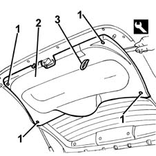

7015A04 tailgate interior panel - r+r
- Path
- Procedures > 70 FITTINGS > 7015 TAILGATE/FLAP > 7015A tailgate assembly > 7015A04 tailgate interior panel - r+r
- Kind
- repair procedure (removal / refitting; the operation number is the code)
- Applies to
- all engines; all production periods
- Interactive page
- https://sloeber94.github.io/elrnDB-fMltpl/en/#/2892111
Applies to: all engines; all production periods
 Removing
Removing
 Refitting
Refitting1. Open the tailgate and undo the bolts.
2. Prise the panel off the internal retainers using the appropriate tool.
 | Name | Country |
|---|---|---|
2 | Scraper blade | 1.878.077.000 |
3. Remove the panel after releasing it from the handle.

Applies to: all engines; all production periods
Refitting
RemovingCheck that the panel is undamaged and that the retainers are intact and correctly positioned.
Fit the panel, engaging it in the handle.
Fit the panel, engaging the retainers.
Tighten the bolts.
Topics that link to this page (14)
- 5050C10 rear window washer jet - r+r clean and/or position
- 5050C42 rear wiper motor - r+r
- 5050C45 rear motor wiper intermittent function - r r
- 5505B55 tail-gate wiring - r r
- 7015A20 TAILGATE - R.R.
- 7015A58 internal tailgate moulding (one) - r+r
- 7015B22 linkage joining block and lock - check operation with panel/protection removed
- 7015B36 lock block-r r
- 7015B46 tailgate lock interior handle - replace
- 7015B60 EXTERIOR HANDLE for opening TAILGATE with switch for tailgate release - R.R.
- 7035B12 Tailgate rearscreen (bonded type) WINDOW GLASS - R.R. - Includes. cleaning edges of glass and housing in tailgate
- 7035B16 Tailgate windscreen (bonded type) WINDOW GLASS - R.R. - Includes. cleaning housing in tailgate
- 7055A50 frieze, hinge cover or code (one) - r+r
- 7055A54 NUMBERPLATE HOLDER - R+R